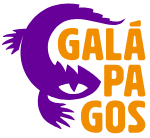

Sumário [Ao clicar no link o usuário deve ser direcionado para respectiva seção - Pesquisar sobre o uso de âncoras se não implementou em atividades anteriores]
Editoras
-

Papergames
A PaperGames é uma editora brasileira de jogos de mesa modernos (também chamados de “boardgames”) que publica no Brasil jogos licenciados.
-

Galápagos Jogos
A Galápagos Jogos é uma editora brasileira que atua no mercado de jogos de tabuleiro modernos e RPGs, traduzindo e divulgando no Brasil jogos internacion.
-

Grokgames
Coup e muitos outros jogos de tabuleiro é na Grok Games. Diversão e estrátegia para todos os jogadores. Mandala+Ludofy = Grok Games. Todo mundo se diverte!
Prêmio Spiel des Jahres
O prêmio é concedido por um júri de críticos alemães, austríacos e suíços de jogos de tabuleiro, que revisa os jogos lançados na Alemanha nos doze meses precedentes. Os jogos considerados para o prêmio são jogos de estilo familiar. Jogos de guerra, Role-playing games, jogos de cartas e outros jogos complicados, altamente competitivos ou amadores estão fora do escopo do prêmio. Desde 1989 há um prêmio especial para jogos infantis.
História e Importância do Prêmio Spiel des Jahres
O Prêmio Spiel des Jahres, criado em 1978 na Alemanha, é uma das mais prestigiosas premiações do mundo dos jogos de tabuleiro. Idealizado por um grupo de críticos de jogos alemães, o prêmio visa reconhecer e promover jogos de tabuleiro de alta qualidade, incentivando a criatividade e a inovação na indústria. Desde sua criação, o Spiel des Jahres se tornou uma referência global, influenciando tanto os consumidores quanto os designers de jogos.
Além de seu impacto imediato nas vendas dos jogos vencedores, o Spiel des Jahres desempenha um papel crucial na popularização dos jogos de tabuleiro como uma forma legítima de entretenimento e educação. Ao destacar jogos que combinam diversão, estratégia e aprendizado, o prêmio ajuda a introduzir novos jogadores ao hobby e a fomentar uma cultura de jogo saudável e inclusiva.
Critérios para premiação
O prêmio é concedido por um júri de críticos alemães, austríacos e suíços de jogos de tabuleiro que revisa os jogos lançados na Alemanha nos doze meses precedentes. Os jogos considerados para o prêmio são jogos de estilo familiar. Jogos de guerra, Role-playing games, jogos de cartas e outros jogos complicados, altamente competitivos ou amadores estão fora do escopo do prêmio. Desde 1989 há um prêmio especial para jogos infantis.
Os critérios de avaliação para o prêmio incluem originalidade, jogabilidade, design, componentes e a capacidade do jogo de envolver os jogadores. Os jurados, compostos por críticos e especialistas em jogos, testam intensivamente cada jogo indicado antes de tomar uma decisão. Esse rigoroso processo de seleção assegura que apenas os melhores e mais inovadores jogos recebam o prestigiado selo do Spiel des Jahres, elevando os padrões da indústria e oferecendo aos jogadores experiências memoráveis.
Vídeos [Pesquisar como incluir arquivos de vídeo]
Pesquisa de opinião
Conteúdo Online
-
Simuladores
-
Fóruns/Portais